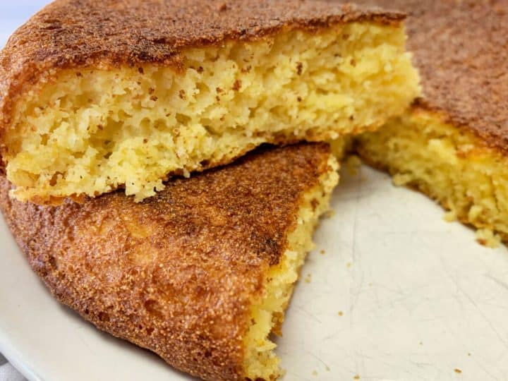

Easy Cornbread

Easiest traditional cornbread!
This delightful side item is a tasty yet simple addition to any southern dish.
Ingredients
- 2 cups Martha While/White Lily butter milk corn meal mix (regular will do)
- 1 large egg
- 1 cup buttermilk (regular milk to substitute)
- 1/2 cup oil (canola or vegetable is best
- 1 Tbsp butter to top muffins
Directions
- preheat oven to 425 degrees fahrenheit.
- Add cornmeal to medium mixing bowl.
- Incorporate egg and buttermilk.
- Mix in oil.
- Grease muffin tin or spay with cooking spray. (This recipe can be cooked in regular pan or cast iron skillet if muffins not desired)
- Evenly fill muffin cups and put in oven.
- Bake for approximately 20 minutes, until toothpick inserted removes cleanly and tops are golden brown.
- Remove from oven add butter to tops. Once butter is melted tilt muffins to prevent them from turning soggy.
- Serve and enjoy.